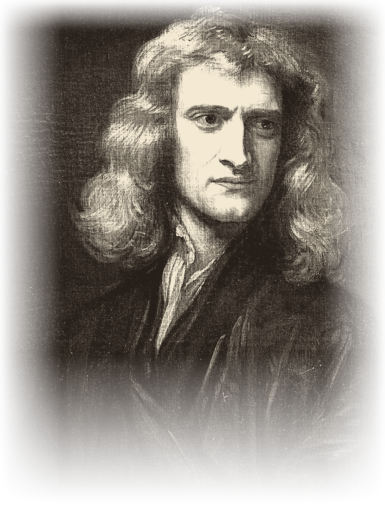

1Isaac Newton was born on December 25, 1642, in England. His childhood was difficult. His father died shortly after he was born. His mother remarried and left him with his grandmother, Marjorie. Newton lived on a boring farm and spent most of his time alone.
2His grandmother wanted him to be a farmer and take care of pigs. But Newton was not interested in farming. He preferred to watch the rain, the wind, and the grass. His grandmother did not like his “observation.” When he was 12, his mother and grandmother sent him to school. He stayed at the house of a pharmacist, Mr. Clark. There he discovered a library with books on chemistry, mathematics, and astronomy. He read many of them and learned a lot.
3After a few years, his mother took him away from school to work on the farm again. One day, he had to guard the pigs, but he was not paying attention. He was thinking about nature and the books he had read. The pigs escaped and destroyed the crops. After this failure, his uncle William convinced his mother to send Newton to Cambridge University.
4At Cambridge, Newton had to work as a servant to pay for his studies. He cleaned rooms and swept stairs, but he did not care. He read all the important science books of that time.
5In 1665, something terrible happened. The plague arrived in London from ships. Thousands of people died every day. Newton left Cambridge and returned to his family’s farm. The village was safer and cleaner. There, he had time to think and observe nature again. During this time, he made his most important discoveries.
6First, he experimented with light and colors. He bought a glass pyramid called a prism. He let a single ray of sunlight pass through it. The white light became a rainbow of many colors. He proved that white light is a combination of all colors. He also built the best telescope of his time, and the King of England congratulated him.
7Then came his most famous idea. One day, in the garden, he saw an apple fall from a tree. He asked himself: “Why do objects fall to the ground? Is there a force that pulls them?” After many calculations and experiments, he discovered the force of gravity. He understood that the Earth attracts all objects. The apple falls because of gravity. But gravity does not work only on Earth. All bodies in the universe attract each other. The planets stay in orbit around the Sun because of gravity. The Moon attracts water in our oceans and creates tides. Gravity is like a string that holds the planets in their places.
8Newton created three important laws of motion. With these laws and the law of gravity, he could explain how any object moves. He became the most famous scientist in the world, admired by kings and queens. He continued to observe nature and kept a telescope on his roof.
9Today, his formulas help us build cars, bridges, and rockets for space travel. Newton said: “Remember me and my apple.” His story is the story of a man who never stopped looking and thinking.